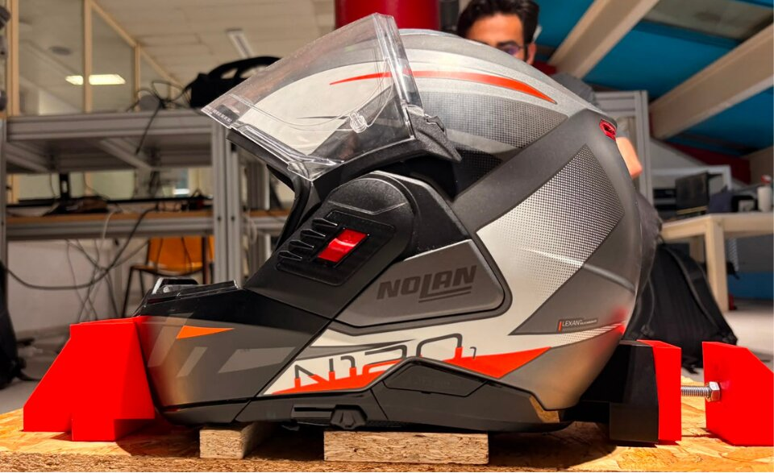
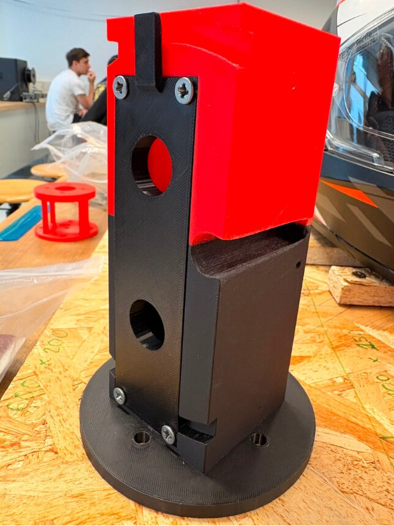
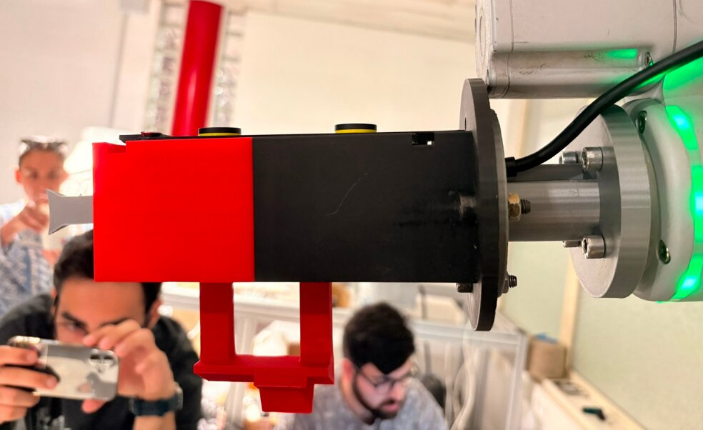
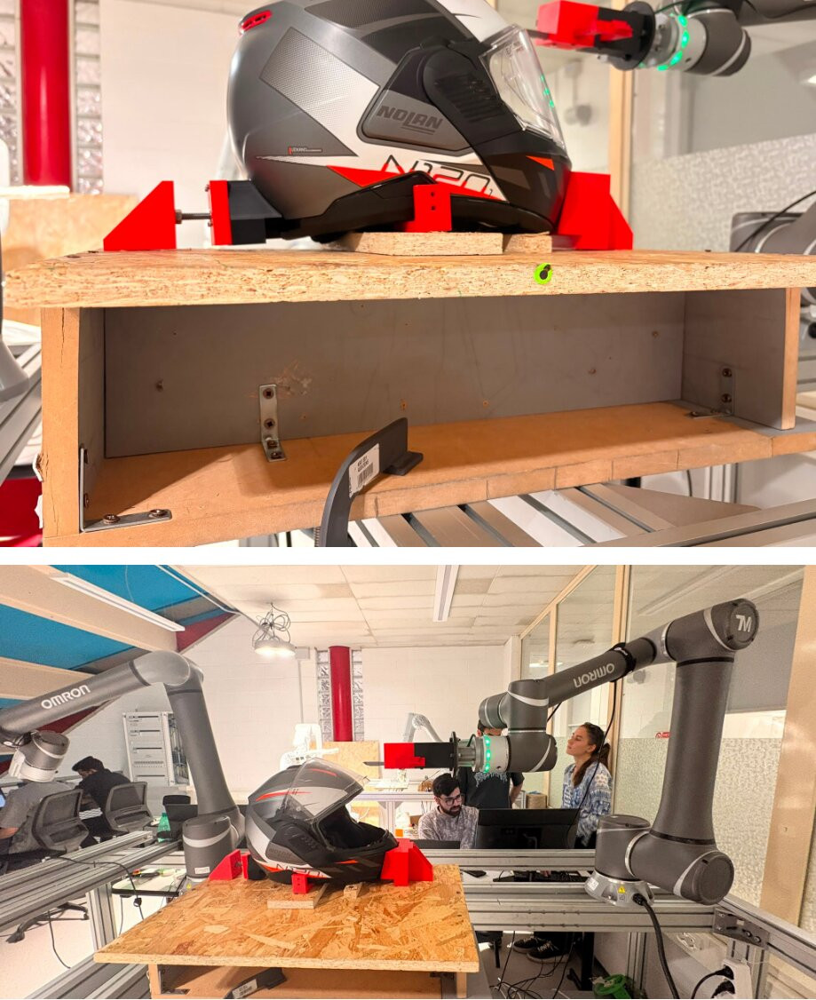

A fully robotic workcell built on the Omron TM12 cobot that cyclically inspects a motorcycle helmet for a surface defect, localises it in 3D, and physically marks it with a pen — scripted entirely in Python through the TM12 Listen Node, with no offline teaching.
Anchorage — a rigid fixture for the helmet that doesn't obstruct the robot's workspace.
Eyeshield actuation — open and close both the outer visor and inner sun-visor cyclically.
Defect detection — locate a surface defect (a green sticker) in 3D via a ZED Mini stereo camera.
Physical marking — move the robot to the detected point and mark it with a pen tool.
Full Python control — script the entire pipeline through the TM12 Listen Node, no offline teaching.
The helmet has to be held rigidly in all six degrees of freedom without high clamping pressure that could damage its shell, and without blocking the arm's reach. The solution uses four 3D-printed clamps that key into the helmet's own internal cavities rather than relying on friction.
Mirrors the helmet's front curvature and keys into a dedicated cavity with a tab-and-slot lock — rotation-independent of clamping pressure. Sized to bear the pull and overturning moment from outer-visor actuation.
Mirrors the rear shell curvature, positioned opposite the front clamp along the longitudinal axis. Closes the constraint set against backward slide and twisting.
Seats inside the helmet's internal cavity to resist the forward push generated during outer-visor actuation, without adding clamping pressure.
Acts as a rigid stop against the helmet lifting at the rear when the front visor is actuated — distributes clamping stress across the shell to avoid stress concentrations.
An H-shaped wooden base elevates the whole fixture, keeping the helmet within the TM12's optimal working envelope and avoiding kinematic singularities near the table.


A rigid, multi-faced 3D-printed core mounted on the TM12 wrist. Every face shares an identical bolt pattern, so tools (visor openers, marker, camera) bolt on and off as independent modules.
Face profile is the inverse of the visor button, maximizing contact area; the lifting edge mirrors the visor's 45° entry angle for clean engagement before the vertical lift.
Dual-mode interface — a form-fitted protrusion for the "pull" stroke and an angled face for the "release" rotation — on a two-leg structure that resists the bending and vibration from the snap-release.
Camera and marker share a face to keep kinematic approach vectors simple and minimize unnecessary joint rotation during a cycle.
All communication with the TM12 runs over three simultaneous TCP channels:
| Channel | Port | Purpose |
|---|---|---|
| Modbus TCP | 502 | Read-only live TCP pose & joint angles, polled before every camera frame |
| TMSCT | 5890 | Motion commands (PTP / LINE / JMOVE) to the Listen Node |
| TMSVR | 5891 | Named variable table, used to confirm Listen Node readiness |
The TM12's native ChangeBase / ChangeTCP commands cause the robot to silently exit the Listen Node, severing the control connection — so every coordinate transform is handled as a pure translation in Python instead:
If the table moves, one number changes — no waypoint needs re-editing, and no rotation matrices are involved since the table is axis-aligned to the robot base.
Every trajectory starts and ends at a fixed origin, resetting global state between tasks.
Each task defines a proximity safe-point to avoid lateral interference with the anchorage fixture.
Retraction mirrors the entry path — the TCP returns to a safe-point before homing.
Checks J5/J6 before scanning and corrects silent IK wrist-flips with a JMOVE + re-PTP.
Two independent detection pipelines were developed in parallel and compared:
| Aspect | Pipeline 1 — Sphere Arc | Pipeline 2 — Ellipse Orbit |
|---|---|---|
| Scan geometry | 4 hemisphere arcs, varying elevation | 7-point horizontal ellipse, fixed elevation |
| Camera transform | SolidWorks-derived + 2-view calibration | Calibrated 6-view rotation matrix |
| Marking | Not integrated | Fully integrated |
| Code structure | Monolithic, single file | Modular, one file per responsibility |
| Status | Detection validated | End-to-end validated |
BGR → HSV — HSV is far less sensitive to lab lighting changes than RGB.
Threshold — HSV bounds plus an RGB ratio check to filter lighting artefacts.
Morphology — open + close operations remove noise and fill small holes in the mask.
Contours — filtered by area and circularity; best candidate selected.
Depth → 3D — ZED depth sampled within the contour mask; robust estimate via median + trimmed mean.
Because the marker tip isn't at the TCP origin, the robot solves the target orientation first, then computes the tip offset at that orientation — otherwise the pen would miss laterally. The touch height (Z) uses a physically calibrated constant rather than the noisier depth reading, since ZED depth at oblique scan angles has 5–15 mm of frame-to-frame noise.
| Radial offset from apex | Surface drop (ΔZ) | Assessment |
|---|---|---|
| 10–20 mm | 0.4–1.6 mm | Negligible / within clearance |
| 35 mm | 4.9 mm | Borderline safe |
| 50 mm | 10.0 mm | Needs geometric correction |
| 80–100 mm | 27.5–46.9 mm | Misses the surface |
A spring-loaded marker sleeve absorbs 2–3 mm of residual error as controlled overtravel, keeping the fixed-Z approach reliable within roughly ±35 mm of the helmet apex.
A few of the debugging stories that shaped the final design:
Pipeline 1's scan sphere was originally centred on the robot flange position rather than the camera position. At the home orientation the ZED camera sits ~173 mm ahead of the flange, so every arc waypoint orbited a point 173 mm off the actual helmet centre — an asymmetric scan that mostly missed the helmet. Fixed by deriving the sphere centre from the live camera pose instead.
Early depth extraction sampled a fixed 18-pixel circle around the sticker's centroid — which pulled in curved helmet surface outside the actual sticker. This produced a confirmed ~1.4–1.6× depth scale error, caught by moving the robot a known distance and comparing the resulting 3D shift. Fixed by sampling depth only within the actual contour mask.
Several visor waypoints threw a kinematic-infeasibility error when sent as Cartesian LINE moves. All non-contact visor motion was switched to joint-space PTP; LINE was kept only for the marking touch-down and retract, where straight-line contact actually matters.
Unconstrained PTP commands let the controller silently pick an alternate wrist configuration for the same Cartesian pose, producing large, unexpected arm motions. Fixed with a joint-configuration guard before scanning, and a JMOVE ±180° on J6 followed by a re-PTP to lock the intended configuration.
TM12's native frame-change commands silently kick the robot out of the Listen Node, severing the Python control connection entirely. Solved by keeping all coordinate-frame arithmetic as plain translation offsets in Python, never touching the robot's native frame commands.
Modular end-effector — four interchangeable tools on one 3D-printed base: camera, pen, and two visor actuators.
Rigid anchorage — inverse-geometry interlocking clamps with H-beam elevation, no high clamping pressure.
Full visor actuation — both outer and inner visors open and close reliably with singularity-safe trajectories.
3D defect localisation — ZED Mini + multi-view fusion, accurate to ±35 mm at the apex.
Automated marking — full end-to-end pipeline with tip-offset compensation physically marks the defect.
Scriptable control — complete Python control via the Listen Node, no offline teaching, no proprietary TM tools.
Reliable within ~±35 mm of the helmet apex. → A ~20-line analytical correction using the spherical surface model would extend this across the full helmet, with no new calibration hardware.
The compensation math is written and correct — it just needs connecting to Pipeline 1's motion sequence.
The clamping blocks reduce camera access to the rear/lower helmet. → Miniaturising the clamp geometry would open that view up.
Both pipelines scan the same fixed positions regardless of where the defect actually is. → A coarse scan to identify the quadrant first, then a targeted fine scan, would cut cycle time.
